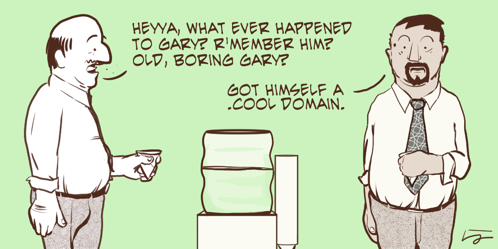

June 11, 2015

The internet’s governing body ICANN is thinking of another controversial move, after the introduction of an (email) address verification process that can make your website go dark. Just this time, it’s an attack on people’s privacy, and that’s something you shouldn’t take lightly.
Read more →
June 9, 2015
Published on Medium:
Yes, I’m publishing this on Medium and not on my own domain name. Because it allows me to get my thoughts out of the system and share it with a wider audience until I‘ve made up my mind where and how to relaunch my personal web presence.
Why relaunch?
- I’ve got my own domain name, and it feels like I’m not making the best use of it at the moment.
- I never made the switch to English for personal long form writing since moving from Germany to Australia, and later to New Zealand. As a non-native English speaker, I often feel my writing isn’t good enough, and the following quote was a kick in the butt: “It is better to write not-well than to not write.”
- We had plenty of discussions about personal sites and our individual voices on the web at work. Over the last few years, I’ve been writing quite a bit on the iwantmyname blog which is simply not me as a person, and I want to change this.
Read more →
May 22, 2015


You’ve started your own business, club, or blog, and you can’t wait to share it with the world. There’s still work to be done, but the primary focus is now on branding. You do some critical thinking about your product and your industry, come up with a list of potential brand names, and pick one that fits perfectly—it’s clever, descriptive, and extremely easy to remember. Now to register the domain.
Or not. It’s taken.
Trying to get “the perfect domain” can be really frustrating, or, at the very least, really expensive. Well over 100 million .COM domains are currently registered,, and the estimated total of registered domains topped a quarter of a billion last year. More likely than not, “the good ones” are already taken.
What’s a person to do? Well, there are a few options, which we’ll break down for you in this series on getting the right domain for your brand, even if the name you really want is already registered.
Read more →
May 11, 2015


Squarespace is an amazing, all-in-one site builder that makes top-end web design accessible to everyone. Seriously, with no skill going in, you’ll be able to build sites, stores, photo galleries, and blogs in minutes. It’s that intuitive.
What’s not quite as intuitive though is the domain setup. We pride ourselves in providing one-click installs to a ton of platforms, but sometimes there’s an extra step involved that can turn that one click into a bunch of clicks. Have no fear though, with this short guide, you’ll have your domain working with your Squarespace site in no time.
Read more →
April 30, 2015


Being involved in the local community is vastly important to us, so this year we made a conscious decision to support more events that at least some of the iwantmyname team could actively participate in. Since we are already one-third of the way through 2015, I think it’s about time to take stock of what has been achieved so far and look at where we plan to go in the future.
Read more →
April 30, 2015

No matter what service you offer or product you sell, a good chunk of any business is customer support. But unlike many other aspects of running a business, how companies handle customer support can vary widely, even among companies in the same industry.
In our little corner of the Internet, the domain industry, we have a couple of unique challenges. First, domain registration is a comparatively low margin business, so to keep our business afloat, we rely on the support of a lot of customers. Tens of thousands, with 150,000+ domains under management. And no matter how stable your platform, when you’re dealing with that many moving parts, any flaw, bug, or confusing process will be uncovered very quickly.
Read more →
April 29, 2015
In the early days of domain registration (the dark times before the new generic top-level domains (gTLDs) were launched), there was a point where it was quite hard to find a domain that was both short and memorable. Many of the good .COM domain names were taken, as were the more common words and phrases in various country code top-level domains (ccTLDs) like .CO.UK and .CA. So what do people commonly do when there’s a shortage of something that’s in demand? They get creative.
The idea of a domain hack is to take a word or brand, like iwantmyname, and use the domain extension as part of the word. So instead of iwantmyname.com, a domain hacker would go with iwantmyna.me (using the .ME TLD) or iwantmy.name (using the .NAME TLD).
Read more →
April 20, 2015
We published a fairly extensive guide a while back to help you figure out what to do if there’s a domain you want that’s already been registered, or similar issues. But we didn’t go into a lot of detail about exactly how to contact the current owner of a domain that you’re interested in acquiring though. Or what to do if you do manage to get in touch and make an offer. If you’re in this boat, we have some tips on how to navigate these waters.
Read more →
April 17, 2015

April 15, 2015
- Step 1: Go to a website
- Step 2: Find the social icons
- Step 3: If the Twitter icon isn’t shaped like the birds above (angled slightly up), you’ve probably found a brand that either doesn’t understand the internet or doesn’t care about details (possibly worse?).
Note that there are levels of terribleness here.
Quality Score -100: Definitely the wrong logo, but I can see how someone could see this and not instantly think it’s wrong. If you see something like this on a personal site, politely send an email to the site owner.
Quality Score -4000: You know that feeling when you walk into a restaurant with carpet clearly from the 1980’s?
Older posts